The Garrett and Munk internal wave spectra Matlab toolbox
J. Klymak jklymak@uvic.ca
Contents
zzPlotHeader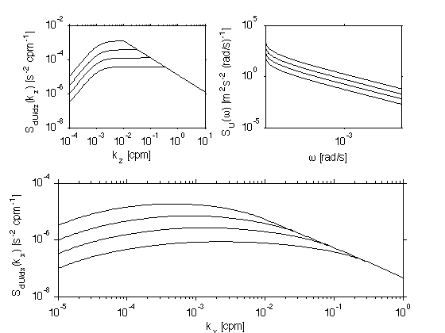
Downloading
The routines are here: ./GarrettMunk.tgz
Testing the GM spectra, and how to use this toolbox
The GM vertical spectra requires some care to get reasonable values from. It is further complicated by the different set of parameters that folks have used to make it work.
This is a gziped tar file, which when unpacked should yield a directory "GarrettMunk3/" with the m-files.
REFERENCES:
- Garrett and Munk, 1972, Geophys. Fluid Dyn.
- Garrett and Munk, 1975, J. Geophys Res.
- Munk 1981, Evolution of Physical Oceanography
- Katz and Briscoe, 1979, J. Phys. Ocean
- Gregg and Kunze 1991, J. Geohpys. Res.
- Klymak and Moum, 2007, J. Phys. Ocean.
The functions are called as follows:
params= Gm76Params
kx = logspace(-5,1,1000);
f = sw_f(45);
N=5.2e-3;
S = GmKz('Vel',kx,f,N,params);
params =
s: 2
t: 2
jp: 0
jstar: 3
The parameters are for the shape of the vertical wavenumber spectrum. This shape has changed over the years (GM75, GM76, etc). Most users are probably interested in GM76, as above.
f is the Coriolis parameter, and N is the local buoyancy frequency.
Below are more examples of how to call the functions. There are vertical-wavenumber/frequency spectra, and vertical-wavenumber/horizontal wavenumber spectra. 1-D spectra are derived from the 2-D spectra, using appropriate integration, as described in Briscoe and Katz 1979.
These routines are provided w/o warranty. If you find any errors or inconsitencies, please let me know and I'll try and fix them. J. Klymak jklymak@uvic.ca
Vertical form - no high wavenumber roll-off:
In the original form of the Garrett and Munk Spectrum there was a single vertical wavenumber power law, usually k_z^-2, with a roll off at low wavenumbers: 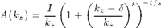 where 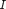 is a normalization constant, 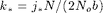 and  modify the shape at low wavenumbers, and combinations of t and s give the power law.
modify the shape at low wavenumbers, and combinations of t and s give the power law.
f = sw_f(30); N = 5.2e-3; kz = logspace(-4,0,100); params=Gm76Params; figure(1);clf;set(gcf,'defaultlinelinewidth',1.5); Ssh = GmKz('Shear',kz,f,N,params); Sstr = GmKz('Strain',kz,f,N,params); subplot(1,2,1); loglog(kz,Ssh); xlabel('k_z [cpm]'); ylabel('\phi_{U_z} [s^-2 (cpm)^{-1}]'); set(gca,'ylim',[1e-6 1e-3]);hold on; subplot(1,2,2); loglog(kz,Sstr); xlabel('k_z [cpm]'); ylabel('\phi_{\zeta_z} [(cpm)^{-1}]'); set(gca,'ylim',[1e-2 1e1]);hold on;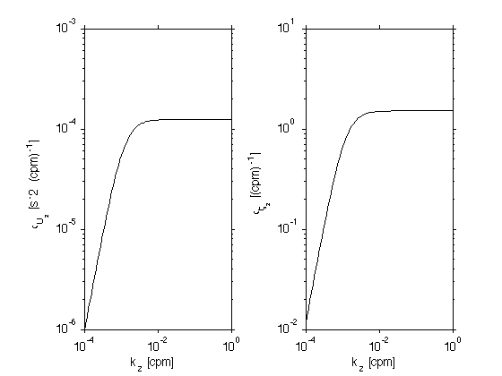
Variations of the parameters
there are a few variations on the parameters that go into the vertical wavenumber model. Here we show the difference between the GM76 and the Gregg Kunze 91 model, and the effect of changing the j_* parameter to 6.
These clearly make a difference, but which shape is used is somewhat arcane.
clf
col={'k','r','g','b','m'};
for i=1:3
if i==1
params= Gm76Params;
elseif i==2
params=Gk91Params;
else
params=Gm76Params;
params.jstar = 6;
end;
Ssh = GmKz('Shear',kz,f,N,params);
loglog(kz,Ssh,'col',col{i});
xlabel('k_z [cpm]');
ylabel('\phi_{U_z} [s^{-2} (cpm)^{-1}]');
set(gca,'ylim',[1e-6 1e-3]);hold on;
end;
legend('GM 76 j_*=3','GK 91 j_*=3','GM76 j_*=6',4);
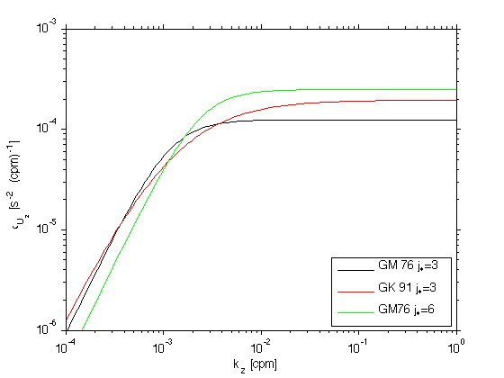 Adding a roll-off at high wavenumbers.
In observations, there is general there is a roll-off of high-wavenumber energy, the wavenumber of the roll-off moves to lower wavenumbers as the energy goes up. (i.e Gargett et al 81, Gregg et al 93, Polzin 95)
Ef = [0 10 3 1.1 0.3]; clf for i=1:length(Ef); params= Gm76Params; params.Ef=Ef(i); Ssh = GmKz('Shear',kz,f,N,params); loglog(kz,Ssh,'col',col{i}); xlabel('k_z [cpm]'); ylabel('\phi_{U_z} [s^{-2} (cpm)^{-1}]'); set(gca,'ylim',[1e-6 2e-3]);hold on; end; legend('No roll-off','E=10 Gm','E=3 Gm','E=1.1 Gm','E=0.3 Gm',4)

Frequency Spectra
There is only one form of the frequency spectrum: 
params= Gm76Params; om = linspace(f,N,1000); Ssh = GmOm('Shear',om,f,N,params); clf loglog(om,Ssh); xlabel('\omega [rad s^{-1}]'); ylabel('\phi_{U_z} [s^{-2} s]');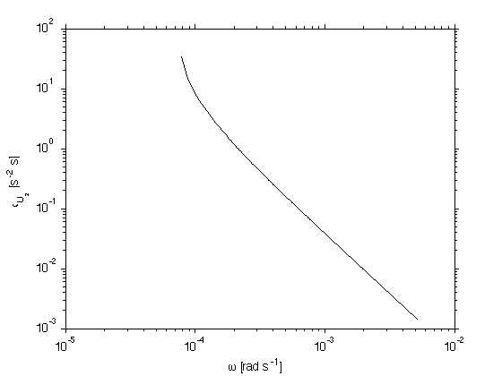
Combined vertical-frequency spectra
You can of course make combined spectra. The spectra above are integrals over all wavenumbers or frequency of the 2-D spectrum.
Note that the frequency spectrum is derived from the 2-D spectrum by inetegrating. The felicity of this integration can be changed by specifying the number of vertical wavenumbers to consider: params.Nkz. The default is 10^3. However the integrated value is quite insensitive to this, and anything over 50 seems to be OK.
Vertical wavenumber spectra from this 2-D spectra are more tricky. Because so much of the power in the frequency spectrum is near f, a lot of resolution needs to be put near f. The function =GmKz.m= uses a transformation from Garrett and Munk as outlined below to put enough resolution near f. Again, the default of 1000 is overkill.
It is of course possible to write out these spectra w/o performing 2-D spectra. However, this method allows us some consistency across different fields and was the easiest to code.
clf eps = f/N; Nphi = 1000; phi = (1:(Nphi))*(acos(eps))/(Nphi+1); om = f*sec(phi); kz = logspace(-4,1,1000); params.Ef = 1; Ssh = GmOmKz('Vel',om,kz,f,N,params); subplot(3,3,[1 5]); pcolor((om),(kz),log10(Ssh));shading flat; set(gca,'xscale','log','yscale','log') xlabel('\omega [rad s^{-1}]'); ylabel('k_z [cpm]'); subplot(3,3,[7 8]) col = {'r','g','b'}; num = 0; loglog(om,trapz(kz,Ssh),'linewi',2);hold on; for nkz=[5 50 500]; num = num+1; params.Nkz=nkz; Ss_ = GmOm('Vel',om,f,N,params); loglog(om,Ss_,'col',col{num});hold on; set(gca,'xlim',[min(om) max(om)]) end; legend('Answer','Nkz=5','Nkz=50','Nkz=500','Location','EastOutside') xlabel('\omega [rad s^{-1}]'); ylabel('\phi_{U}'); ylim([1e-4 300]) set(gca,'xtick',10.^[-4:1],'ytick',10.^[-4:2:5]) subplot(3,3,[3]); Nphi = [2 5 20]; for i=1:length(Nphi); params.Nphi=Nphi(i); S = GmKz('Vel',kz,f,N,params); loglog(kz,S,'r');hold on; end; hold on; Ss = trapz(om,Ssh'); loglog(kz,Ss) ylabel('\phi_U(k_z)'); xlabel('k_z [cpm]'); set(gca,'xlim',[min(kz) max(kz)]);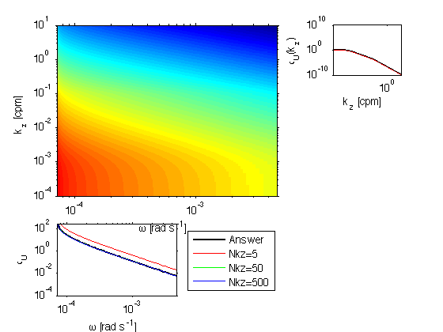
Check of buoyancy scaling..
The shear spectra should change with buoyancy...
Note that higher N implies more vigorous shear spectra. The roll-off is at the same vertical wavenumber. Note that the Froude numbers are the same at the high wavenumbers. High Froude numbers are typically used as the reason for the h
params.Ef=1; clf S1 = GmKz('Shear',kz,f,N,params); S2 = GmKz('Shear',kz,f,N*2,params); subplot(2,1,1); loglog(kz,S1,kz,S2); ylabel('\phi_{Shear}'); xlabel('k_z [cpm]'); subplot(2,1,2); loglog(kz,cumsum(diffsame(kz).*S1)/N^2,kz,cumsum(diffsame(kz).*S2)/N^2/4); ylabel('Fr^2'); xlabel('k_z [cpm]'); grid on; set(gca,'ylim',[1e-3 10])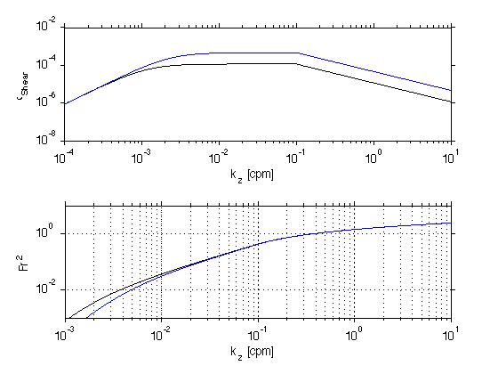
Horizontal spectra
Horizontal spectra are a difficult combination of vertical and frequency spectra, and then an integration from full horizontal wavenumbers to uni-directional wavenumbers. See Klymak and Moum 2007a, or Katz and Briscoe 79 for how this is carried out.
clf kx = logspace(-4,-1,100); kz = logspace(-4,1,100); params.Nkz=100; params.Ef=1; S = GmKxKz('Disp',kx,kz,f,N,params); subplot(3,1,[1 2]); pcolor(kx,kz,rlog10(S));shading flat set(gca,'xscale','log','yscale','log'); ylabel('k_z [cpm]'); subplot(3,1,3); loglog(kx,pdif(kx,trapz(kz,S))); hold on; Ss = GmKx('Disp',kx,f,N,params); loglog(kx,pdif(kx,Ss)); xlabel('k_x [cpm]'); ylabel('\phi_{\zeta_x} [cpm^{-1}]');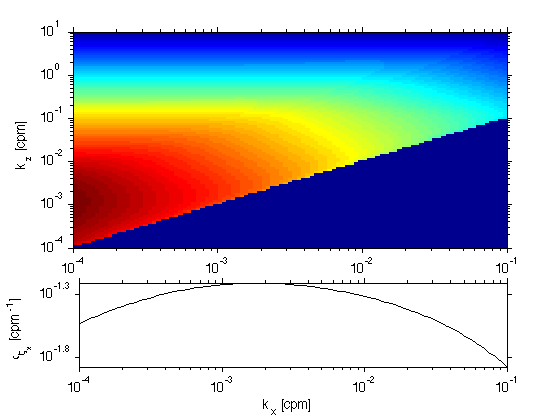
We can check that the horizontal-vertical spectrum is well-formed by comparing to the 1-D vertical spectrum. These are somewhat independent in the code, as the vertical spectrum is derived from the vertical and frequency spectrum.
clf kx = logspace(-6,1,1100); S = GmKxKz('Disp',kx,kz,f,N,params); loglog(kz,pdif(kz,trapz(kx,S')),'--') Ss = GmKz('Disp',kz,f,N,params); hold on; loglog(kz,pdif(kz,Ss)) xlabel('k_z [cpm]'); ylabel('\phi_{\zeta_z} [cpm^{-1}]');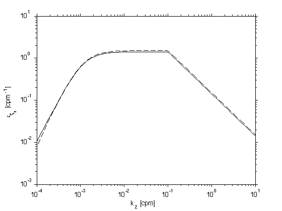